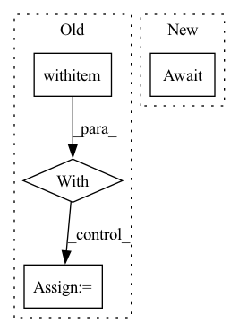

Pattern ID :14937
Before Change
replicas=3,
)
with flow:
with kubernetes_tools.get_port_forward_contextmanager(
"test-flow-slow-process-executor", flow.port_expose
):
// sleep as the port forward setup can take some time
time.sleep(0.1)
client_kwargs = dict(
host="localhost",
port=flow.port_expose,
)
client_kwargs.update(flow._common_kwargs)
stop_event = multiprocessing.Event()
scale_event = multiprocessing.Event()
received_resposes = multiprocessing.Queue()
process = multiprocessing.Process(
target=send_requests,
kwargs={
"client_kwargs": client_kwargs,
"stop_event": stop_event,
"scale_event": scale_event,
"received_resposes": received_resposes,
"logger": logger,
},
daemon=True,
)
process.start()
time.sleep(1.0)
// scale slow init executor up
k8s_clients = K8sClients()
logger.debug("Scale down executor to 1 replica")
k8s_clients.apps_v1.patch_namespaced_deployment_scale(
"slow-process-executor",After Change
api_client = client.ApiClient()
core_client = client.CoreV1Api(api_client=api_client)
app_client = client.AppsV1Api(api_client=api_client)
await create_all_flow_pods_and_wait_ready(
dump_path,
namespace=namespace,
api_client=api_client,In pattern: SUPERPATTERN
Frequency: 4
Non-data size: 4
Instances Fragment ID: 49801971
Project Name: jina-ai/jina
Commit Name: 6e9e7ef32f61cab04c6efc7a9f21659d26b50fdb
Time: 2022-01-10
Author: joan.martinez@jina.ai
File Name: tests/k8s/test_graceful_request_handling.py
M Class Name: AnonimousClass
N Class Name: AnonimousClass
M Method Name: test_no_message_lost_during_scaling(3)
N Method Name: test_no_message_lost_during_scaling(2)
M Parent Class:
N Parent Class:
M File Name: tests/k8s/test_graceful_request_handling.py
N File Name: tests/k8s/test_graceful_request_handling.py
M Start Line: 72
M End Line: 154
N Start Line: 144
N End Line: 242
Before Change
cm1 = ProgressBar() if self.show_progress else nullcontext()
with cm1 as p_bar:
// Unlike gRPC, any arbitrary function (generator) cannot be passed via websockets.
// Simply iterating through the `req_iter` makes the request-response sequential.
// To make client unblocking, :func:`send_requests` and `recv_responses` are separate tasks
asyncio.create_task(_send_requests(request_iterator=req_iter))
async for response_bytes in websocket:
// When we have a stream of responses, instead of doing `await websocket.recv()`,
// we need to traverse through the websocket to recv messages.
// https://websockets.readthedocs.io/en/stable/faq.html//why-does-the-server-close-the-connection-after-processing-one-message
resp = Request(response_bytes)
resp = resp.as_typed_request(resp.request_type).as_response()
callback_exec(
response=resp,
on_error=on_error,After Change
proto = "wss" if self.args.https else "ws"
url = f"{proto}://{self.args.host}:{self.args.port}/"
iolet = await stack.enter_async_context(
WebsocketClientlet(url=url, logger=self.logger)
)
Fragment ID: 49801957
Project Name: jina-ai/jina
Commit Name: 82d3eacef8e3090ba90330842a1c2840fff87764
Time: 2021-10-12
Author: deepankar.mahapatro@jina.ai
File Name: jina/clients/base/websocket.py
M Class Name: WebSocketBaseClient
N Class Name: WebSocketBaseClient
M Method Name: _get_results(5)
N Method Name: _get_results(5)
M Parent Class: BaseClient
N Parent Class: BaseClient
M File Name: jina/clients/base/websocket.py
N File Name: jina/clients/base/websocket.py
M Start Line: 38
M End Line: 105
N Start Line: 36
N End Line: 66
Before Change
proto = "https" if self.args.https else "http"
url = f"{proto}://{self.args.host}:{self.args.port}/post"
with cm1 as p_bar:
all_responses = []
for req in req_iter:
// fix the mismatch between pydantic model and Protobuf model
req_dict = req.dict()After Change
url = f"{proto}://{self.args.host}:{self.args.port}/post"
p_bar = stack.enter_context(cm1)
iolet = await stack.enter_async_context(HTTPClientlet(url=url))
prefetcher = HTTPClientPrefetcher(self.args, iolet=iolet)
async for response in prefetcher.send(request_iterator): Fragment ID: 49801970
Project Name: jina-ai/jina
Commit Name: 2c51fa7e2ca4e2ef72355ae6210ba6056c388bba
Time: 2021-10-05
Author: deepankar.mahapatro@jina.ai
File Name: jina/clients/base/http.py
M Class Name: HTTPBaseClient
N Class Name: HTTPBaseClient
M Method Name: _get_results(5)
N Method Name: _get_results(5)
M Parent Class: BaseClient
N Parent Class: BaseClient
M File Name: jina/clients/base/http.py
N File Name: jina/clients/base/http.py
M Start Line: 58
M End Line: 104
N Start Line: 86
N End Line: 119
Before Change
replicas=3,
)
with flow:
with kubernetes_tools.get_port_forward_contextmanager(
"test-flow-slow-process-executor", flow.port_expose
):
client_kwargs = dict(
host="localhost",
port=flow.port_expose,
)
client_kwargs.update(flow._common_kwargs)
stop_event = multiprocessing.Event()
scale_event = multiprocessing.Event()
received_resposes = multiprocessing.Queue()
process = multiprocessing.Process(
target=send_requests,
kwargs={
"client_kwargs": client_kwargs,
"stop_event": stop_event,
"scale_event": scale_event,
"received_resposes": received_resposes,
"logger": logger,
},
daemon=True,
)
process.start()
time.sleep(1.0)
// scale slow init executor up
k8s_clients = K8sClients()
logger.debug("Kill 2 replicas")
pods = k8s_clients.core_v1.list_namespaced_pod(After Change
api_client = client.ApiClient()
core_client = client.CoreV1Api(api_client=api_client)
app_client = client.AppsV1Api(api_client=api_client)
await create_all_flow_pods_and_wait_ready(
dump_path,
namespace=namespace,
api_client=api_client, Fragment ID: 49801948
Project Name: jina-ai/jina
Commit Name: 6e9e7ef32f61cab04c6efc7a9f21659d26b50fdb
Time: 2022-01-10
Author: joan.martinez@jina.ai
File Name: tests/k8s/test_graceful_request_handling.py
M Class Name: AnonimousClass
N Class Name: AnonimousClass
M Method Name: test_no_message_lost_during_kill(3)
N Method Name: test_no_message_lost_during_kill(2)
M Parent Class:
N Parent Class:
M File Name: tests/k8s/test_graceful_request_handling.py
N File Name: tests/k8s/test_graceful_request_handling.py
M Start Line: 162
M End Line: 253
N Start Line: 251
N End Line: 355